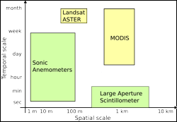

 Evapotranspiration (ET) measures water loss to atmosphere through soil evaporation and plant transpiration, and is a major component of both the land surface hydrologic cycle and the surface energy balance. Our recent proof-of-concept study has shown that multiscale ground-based data can be used to calibrate and adapt ET estimation models, e.g. the Two-Source Energy Balance (TSEB) model. Adapted models can subsequently use input from moderate resolution satellite images (~60 m to 1 km spatial resolution) to generate maps quantifying the magnitude and spatio-temporal variability of ET over large areas.
We are in the process of setting up two long-term ET experimental sites in Alaska and use field data collected at these sites to refine the ET model for interior Alaska, especially accounting for variations in vegetation cover, topography, and frozen soils. We plan to use images from MODIS, ASTER, and LANDSAT, and limited SAR data for improved land cover characterization and land surface temperature calculations to serve as input for the TSEB model.
This research has direct economic benefits for Alaska because spatially distributed ET estimates are critical for projecting water availability for both domestic and industrial (mostly oil and gas) use; for mitigating drought, wildfire, and flood hazards; and for agricultural, water resources, and wildlife management.